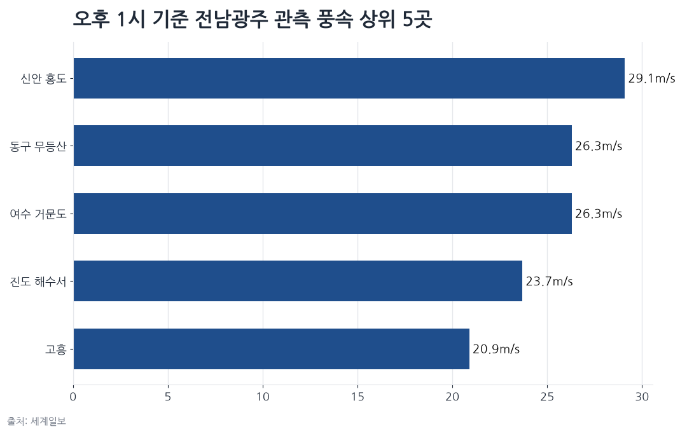

2026-11-28-1734-naver 발행 키트 · 이 페이지는 검색에 노출되지 않습니다.
제목
카테고리
일상태그
본문 (그림·표 포함)
휴대폰 블로그 앱에서는 그림이 같이 붙지 않을 수 있어요. 그때는 [글자만 복사] 후 아래 이미지를 저장해 [그래프1]·[표1] 자리에 첨부하세요.
주말에 텃밭 정리하거나 등산 계획 세우신 분들 많으시죠? 오늘은 바람이 세고 공기도 메말라서, 그냥 넘기기 어려운 날이에요.
▶ 오늘 전국에서 산불이 났어요
산림청에 따르면 오늘 새벽부터 세종을 비롯해 곳곳에서 불이 났어요. 오후 1시까지 경기·세종·강원·경북에서 한 건씩, 모두 4건이 확인됐거든요.
건조한 날씨에 바람까지 강하니까 작은 불씨도 크게 번질 수 있어요. 그래서 산림청이 국민 예방수칙을 지켜 달라고 당부했어요.
▶ 이런 건 하면 안 돼요
먼저 논·밭두렁 태우기, 영농부산물 태우기, 생활쓰레기 태우기는 모두 불법 소각으로 분류돼요. "이 정도쯤이야" 하고 마당에서 태우는 게 가장 위험하대요.
영농부산물은 태우지 말고 가까운 시·군·구 행정복지센터에 파쇄를 신청하면 처리할 수 있어요. 번거로워도 이 방법이 훨씬 안전하고 마음도 편해요.
산에 가신다면 라이터나 버너 같은 인화물질은 가져가지 않는 게 좋아요. 흡연이나 담배꽁초 버리기도 안 되고, 지정된 장소가 아닌 곳에서 밥을 해 먹는 것도 안 돼요.
▶ 어기면 과태료도 있어요
기사에 나온 기준을 표로 정리해 봤어요.
산불 예방 금지행위와 과태료 상한
| 행위 | 과태료 상한 |
|---|---|
| 산림 내 흡연·담배꽁초 버리기 | 100만원 이하 |
| 산림 인접 지역에서 불 피우기·소지 | 300만원 이하 |
| 지정 장소 밖 취사 | 300만원 이하 |
출처: 세계일보
흡연이나 꽁초 투기는 100만 원 이하, 산림 인접 지역에서 불을 피우거나 갖고 있는 경우와 지정 장소 밖 취사는 300만 원 이하예요. 정확한 부과 기준은 지자체 안내를 한 번 더 확인해 보세요.
▶ 바람도 만만치 않아요
전남광주는 11개 시·군에 강풍주의보가 내려졌어요. 오후 1시 기준 간판이 떨어질 듯하다, 나무가 쓰러졌다는 신고 등 4건이 접수됐고, 다행히 인명 피해는 없었다고 해요.
바다 쪽은 더 심해요. 도서 지역 여객선은 43개 항로, 62척이 멈춰 섰어요. 섬 여행이나 배편을 예약해 두셨다면 출발 전에 운항 여부부터 확인하세요.

그래프는 오후 1시 기준으로 관측된 순간 풍속 가운데 높은 곳 다섯 곳이에요. 신안 홍도가 초속 29.1m로 가장 셌어요.
기상청은 초속 15~20m 바람이 내일까지 이어지고, 산지는 초속 25m 이상, 해안은 물결이 최대 2.5m까지 높아질 수 있다고 안내했어요. 또 오늘 오후 6시부터 제주도 서부·동부·북부 앞바다와 남해동부바깥먼바다에는 풍랑경보가 발효돼요.
▶ 오늘 집에서 해 볼 것
베란다 화분이나 건조대, 현관 앞 택배 상자처럼 가벼운 물건은 안쪽으로 들여놓으세요. 창문은 잘 잠그고, 간판이나 현수막이 헐거워 보이면 관리처에 알려 주세요.
그리고 담배꽁초는 꼭 재떨이에 완전히 꺼서 버리고, 밭에서 나온 부산물은 태우지 말고 파쇄 신청부터 해 보세요.
▶ 한 줄 정리
바람 센 날엔 불씨 하나, 간판 하나가 큰일이 되니까 오늘만큼은 조심조심 보내요. 여러분 동네는 바람이 어땠는지 댓글로 알려 주세요.
출처 (본문 맨 아래에 붙여넣기 권장)
- 세계일보, 전국서 산불 잇따라…산림청, 불법 소각금지 ‘국민 예방수칙’ 당부, https://www.segye.com/newsView/20261128505066 - 세계일보, 나무 쓰러지고 간판 흔들리고…강풍 몰아친 전남광주 피해 속출, https://www.segye.com/newsView/20261128504325 - 연합뉴스, 제주 서부 앞바다 등 3곳 풍랑경보, https://www.yna.co.kr/view/AKR20261128039200527 - 연합뉴스, 남해 동부 먼바다에 풍랑경보, https://www.yna.co.kr/view/AKR20261128039100527